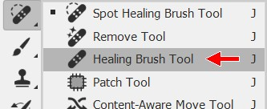
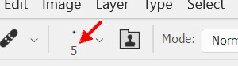
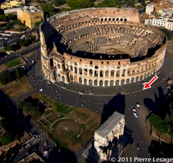
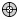
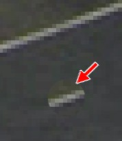
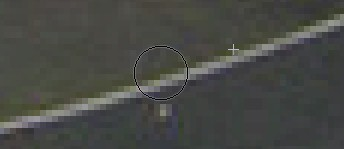

|
Introduction |
Method 1: Brush/Pencil | Method
2: Spot Healing Brush | Method 3: Healing Brush | Method
4:
Patch | Method 5: Content-Aware Move |
| Method 3: Healing Brush Tool |
The Healing Brush Tool works similar to the Spot Healing Brush Tool. When we used the Spot Healing Brush Tool, Photoshop was using whatever was around the object we were trying to remove as source material to replace the object. With the Healing Brush Tool, we first identify a location in the image that Photoshop will use as the source to make changes. When we draw, Photoshop recreates the texture from the sampled area and blends it with the color in the target area to attempt to create a seamless image. I know, it's a little hard to understand how it works. This will become clear once we use the tool.






Make sure you understand what happened in this Step. We didn't just take whatever was under the tiny target in the image for direction 7 and copy it onto the person (that is what the Clone Stamp Tool does, which we will cover in Step 9). Instead, Photoshop took pixels from the area we defined (the area under the tiny target) and combined them with the pixels at the location of the person we were removing. In this way, we get a nice, seamless removal where the colors and texture are maintained and everything is smoothed out and looks realistic. Again, this tool cannot be used everywhere in the image, but it is very effective at removing people who are close to things like buildings and lines.
Speaking of lines, the white line we've been working with in this step is actually there for a very important reason. That line indicates where the outer wall of the Colosseum stood when it was in use. You may notice that only about half of the outer wall remains. Because of the line's importance, we need to be very careful when making changes to our image anywhere near the line. If we distort the line, it will become very obvious that we have made edits. And remember, the last thing we want is for it to be obvious that we have made edits.
As with the Spot Healing Brush Tool, if you try to remove a person or object and you end up with some sort of distortion, simply undo your action (Ctrl+Z) and move on to a different person. We still have 6 different ways to remove items, so we will eventually cover how to remove anything we want.
Let's save our work up to this point.
Save the image
Up next is the Patch Tool, which will take replacing objects in an entirely different direction.